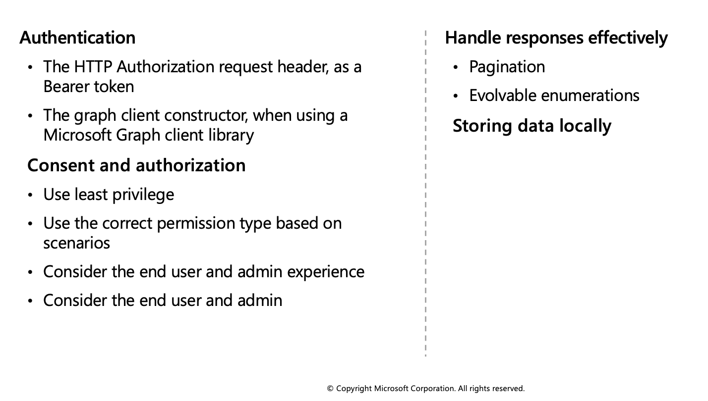

Microsoft Graph
Microsoft Graph is the gateway to data and intelligence in Microsoft 365. It provides a unified programmability model that you can use to access the tremendous amount of data in Microsoft 365, Windows 10, and Enterprise Mobility + Security.

In the Microsoft 365 platform, three main components facilitate the access and flow of data:
- The Microsoft Graph API offers a single endpoint,
https://graph.microsoft.com. You can use REST APIs or SDKs to access the endpoint. Microsoft Graph also includes a powerful set of services that manage user and device identity, access, compliance, security, and help protect organizations from data leakage or loss. - Microsoft Graph connectors work in the incoming direction, delivering data external to the Microsoft cloud into Microsoft Graph services and applications, to enhance Microsoft 365 experiences such as Microsoft Search. Connectors exist for many commonly used data sources such as Box, Google Drive, Jira, and Salesforce.
- Microsoft Graph Data Connect provides a set of tools to streamline secure and scalable delivery of Microsoft Graph data to popular Azure data stores. The cached data serves as data sources for Azure development tools that you can use to build intelligent applications.
Query Microsoft Graph by using REST
Microsoft Graph is a RESTful web API that enables you to access Microsoft Cloud service resources. After you register your app and get authentication tokens for a user or service, you can make requests to the Microsoft Graph API.
The Microsoft Graph API defines most of its resources, methods, and enumerations in the OData namespace, microsoft.graph, in the Microsoft Graph metadata. A few API sets are defined in their sub-namespaces, such as the [call records API],(https://docs.microsoft.com/graph/api/resources/callrecords-api-overview) which defines resources like callRecord inmicrosoft.graph.callRecords`.
Unless explicitly specified in the corresponding topic, assume types, methods, and enumerations are part of the microsoft.graph namespace.
Call a REST API method
To read from or write to a resource such as a user or an email message, you construct a request that looks like the following:
{HTTP method} https://graph.microsoft.com/{version}/{resource}?{query-parameters}
The components of a request include:
- {HTTP method} - The HTTP method used on the request to Microsoft Graph.
- {version} - The version of the Microsoft Graph API your application is using.
- {resource} - The resource in Microsoft Graph that you're referencing.
- {query-parameters} - Optional OData query options or REST method parameters that customize the response.
After you make a request, a response is returned that includes:
- Status code - An HTTP status code that indicates success or failure.
- Response message - The data that you requested or the result of the operation. The response message can be empty for some operations.
- nextLink - If your request returns a lot of data, you need to page through it by using the URL returned in @odata.nextLink.
HTTP methods
Microsoft Graph uses the HTTP method on your request to determine what your request is doing. The API supports the following methods.
| Method | Description |
|---|---|
| GET | Read data from a resource. |
| GET | Create a new resource, or perform an action. |
| PATCH | Update a resource with new values. |
| PUT | Replace a resource with a new one. |
| DELETE | Remove a resource. |
- For the CRUD methods
GETandDELETE, no request body is required. - The
POST,PATCH, and PUT methods require a request body, specified in JSON format, that contains additional information, such as the values for properties of the resource.
Version
Microsoft Graph currently supports two versions: v1.0 and beta.
v1.0includes generally available APIs. Use the v1.0 version for all production apps.betaincludes APIs that are currently in preview. Because we might introduce breaking changes to our beta APIs, we recommend that you use the beta version only to test apps that are in development; do not use beta APIs in your production apps.
Resource
A resource can be an entity or complex type, commonly defined with properties. Entities differ from complex types by always including an id property.
Your URL will include the resource you are interacting with in the request, such as me, user, group, drive, and site. Often, top-level resources also include relationships, which you can use to access other resources, like me/messages or me/drive. You can also interact with resources using methods; for example, to send an email, use me/sendMail.
Each resource might require different permissions to access it. You will often need a higher level of permissions to create or update a resource than to read it. For details about required permissions, see the method reference topic.
Query parameters
Query parameters can be OData system query options, or other strings that a method accepts to customize its response.
You can use optional OData system query options to include more or fewer properties than the default response, filter the response for items that match a custom query, or provide another parameters for a method.
For example, adding the following filter parameter restricts the messages returned to only those with the emailAddress property of jon@contoso.com.
GET https://graph.microsoft.com/v1.0/me/messages?filter=emailAddress eq 'jon@contoso.com'
Query Microsoft Graph by using SDKs
The Microsoft Graph SDKs are designed to simplify building high-quality, efficient, and resilient applications that access Microsoft Graph. The SDKs include two components: a service library and a core library.
The service library contains models and request builders that are generated from Microsoft Graph metadata to provide a rich, strongly typed, and discoverable experience when working with the many datasets available in Microsoft Graph.
The core library provides a set of features that enhance working with all the Microsoft Graph services. Embedded support for retry handling, secure redirects, transparent authentication, and payload compression, improve the quality of your application's interactions with Microsoft Graph, with no added complexity, while leaving you completely in control. The core library also provides support for common tasks such as paging through collections and creating batch requests.
In this unit you will learn about the available SDKs and see some code examples of some of the most common operations.
Install the Microsoft Graph .NET SDK
The Microsoft Graph .NET SDK is included in the following NuGet packages:
- Microsoft.Graph - Contains the models and request builders for accessing the v1.0 endpoint with the fluent API. Microsoft.Graph has a dependency on Microsoft.Graph.Core.
- Microsoft.Graph.Beta - Contains the models and request builders for accessing the beta endpoint with the fluent API. Microsoft.Graph.Beta has a dependency on Microsoft.Graph.Core.
- Microsoft.Graph.Core - The core library for making calls to Microsoft Graph.
Create a Microsoft Graph client
The Microsoft Graph client is designed to make it simple to make calls to Microsoft Graph. You can use a single client instance for the lifetime of the application. The following code examples show how to create an instance of a Microsoft Graph client. The authentication provider will handle acquiring access tokens for the application. The different application providers support different client scenarios. For details about which provider and options are appropriate for your scenario, see Choose an Authentication Provider.
// Build a client application.
IPublicClientApplication publicClientApplication = PublicClientApplicationBuilder
.Create("INSERT-CLIENT-APP-ID")
.Build();
// Create an authentication provider by passing in a client application and graph scopes.
DeviceCodeProvider authProvider = new DeviceCodeProvider(publicClientApplication, graphScopes);
// Create a new instance of GraphServiceClient with the authentication provider.
GraphServiceClient graphClient = new GraphServiceClient(authProvider);
Read information from Microsoft Graph
To read information from Microsoft Graph, you first need to create a request object and then run the GET method on the request.
// GET https://graph.microsoft.com/v1.0/me
var user = await graphClient.Me
.Request()
.GetAsync();
Retrieve a list of entities
Retrieving a list of entities is similar to retrieving a single entity except there a number of other options for configuring the request. The $filter query parameter can be used to reduce the result set to only those rows that match the provided condition. The $orderBy query parameter will request that the server provide the list of entities sorted by the specified properties.
// GET https://graph.microsoft.com/v1.0/me/messages?$select=subject,sender&$filter=<some condition>&orderBy=receivedDateTime
var messages = await graphClient.Me.Messages
.Request()
.Select(m => new {
m.Subject,
m.Sender
})
.Filter("<filter condition>")
.OrderBy("receivedDateTime")
.GetAsync();
Delete an entity
Delete requests are constructed in the same way as requests to retrieve an entity, but use a DELETE request instead of a GET.
// DELETE https://graph.microsoft.com/v1.0/me/messages/{message-id}
string messageId = "AQMkAGUy...";
var message = await graphClient.Me.Messages[messageId]
.Request()
.DeleteAsync();
Create a new entity
For SDKs that support a fluent style, new items can be added to collections with an Add method. For template-based SDKs, the request object exposes a post method.
// POST https://graph.microsoft.com/v1.0/me/calendars
var calendar = new Calendar
{
Name = "Volunteer"
};
var newCalendar = await graphClient.Me.Calendars
.Request()
.AddAsync(calendar);
Apply best practices to Microsoft Graph
This unit describes best practices that you can apply to help your applications get the most out of Microsoft Graph and make your application more reliable for end users.
